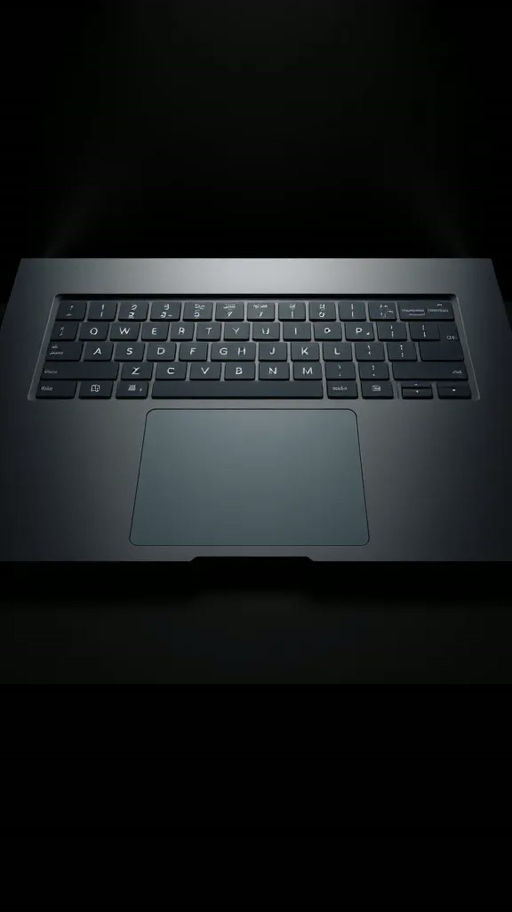
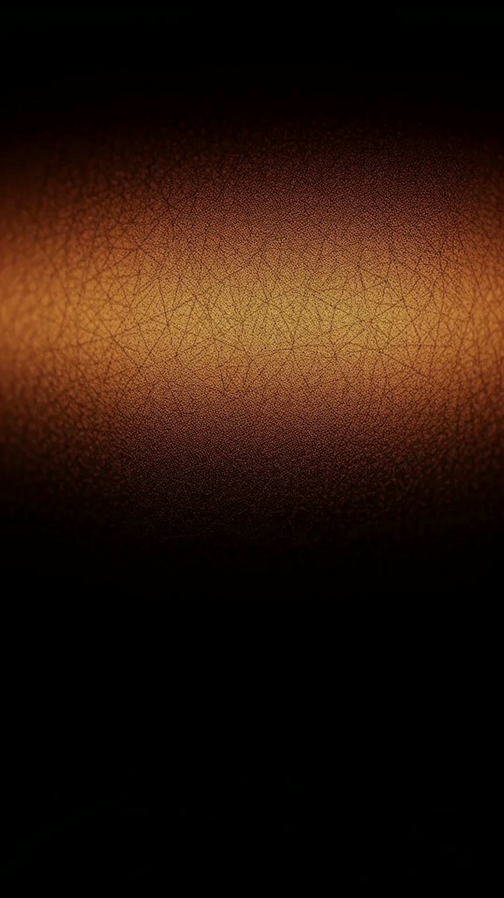
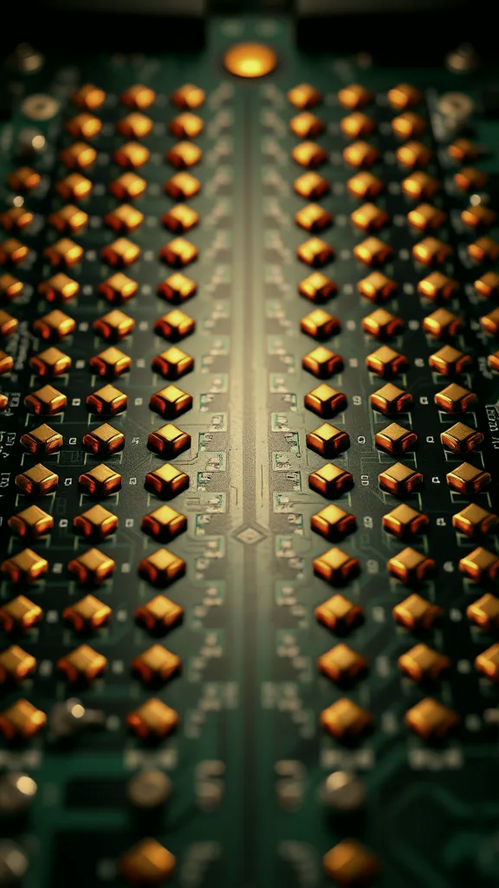
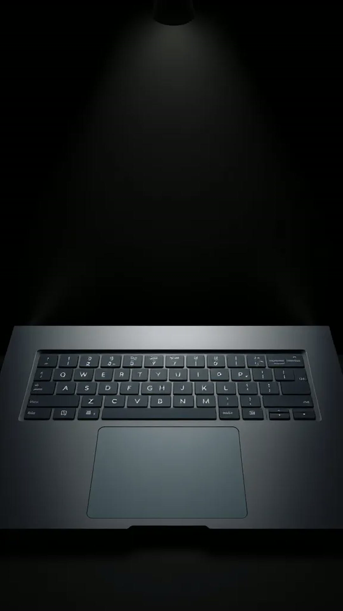

capacitor = holds a tiny charge
Illustration · typical pads: 16 × 12 wires
touch controller0 scans/s
Readings simplified for illustration.
0wires across
Sofia's finger
1/960″pinpointed between two wires
≈ 960 counts per inch (Cirque patent)
FAKE CLICK
⟵ tap ⟶
🧠 your brain hears: “click”
Force Touch trackpad (MacBook, 2015+) · layers simplified
0
Cirque GlidePointthe first widely available touchpad
Apple PowerBook 50016 May 1994 · a trackpad replaces the trackball
Source: Wikipedia “Touchpad”, Apple launch coverage

1a grid that feels charge vanish
2a fake click that fools your brain
Comments
Riya · 2mTOUCH
♡Ankit · 1mTOUCH wait the click is fake??
♡Tara · 40sTOUCH 🤯
♡you · nowTOUCH
♥Add a comment…
Postthe full touchpad breakdown 📩
nowComment TOUCH 👇